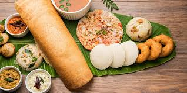

-
Silicon Valley of India
Bengaluru, Karnataka's capital, is a global hub for technology and innovation, housing major IT companies, startups, and research institutions.
-

Cuisine
Karnataka’s cuisine is known for its diversity, including dishes like Mysore masala dosa, Bisi Bele Bath, Udupi cuisine (vegetarian and seafood dishes), and Benne dosa. The use of rice, lentils, and coconut in various dishes reflects the state’s rich culinary traditions.